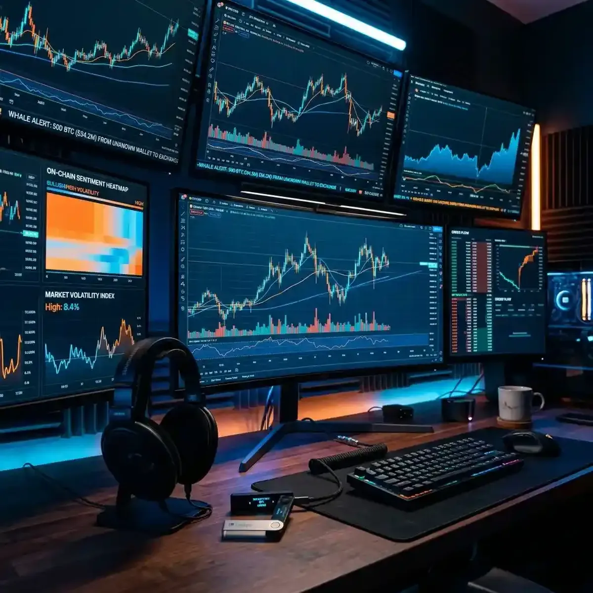

Crypto Market Monitoring: Real-Time Tactical Advantage

The cryptocurrency market of 2026 is a 24/7, high-volatility battlefield where seconds can define a career.
Unlike traditional stock markets that have opening and closing bells, the crypto world never sleeps. Whether it’s a sudden Bitcoin price swing at 3 AM or a viral Altcoin launch on a decentralized exchange (DEX), the environment is one of constant flux. For the modern crypto trader, "casual monitoring" is a recipe for liquidation. To truly gain a tactical advantage, you need a way to aggregate multiple live data sources—price charts, whale-watch alerts, sentiment feeds, and expert analyses—into a single, professional-grade command center. This is where YoutubeMulti's ability to create a "Crypto Tactical Grid" becomes your most indispensable tool.
The 24/7 Whale Watch: Tracking Large-Scale Wallet Movements
One of the most potent leading indicators in the crypto market is "Whale" activity. When a large-scale wallet (belonging to an institution or an early adopter) moves millions of dollars worth of Bitcoin or Ethereum onto an exchange, it’s often a sign of an impending "dump." Conversely, large outflows into cold storage suggest long-term bullish sentiment. Tracking these movements as they happen is key to anticipating major price volatility before it hits the charts.
Using YoutubeMulti, you can build a personal "Whale Monitoring Dashboard." Dedicate a primary tile to a live high-definition Bitcoin/USD chart, while simultaneously keeping an eye on popular "Whale Alert" channels on YouTube or X (Twitter). By watching the reaction of professional technical analysts as they process these massive on-chain movements, you can gain a "second-order" perspective on the market's likely liquidations. This "human-in-the-loop" monitoring—paired with raw blockchain data—is the only way to distinguish between a genuine trend and a temporary institutional blip.
Sentiment Analysis in the Crypto-Sphere: X, Discord, and Telegram
Today, crypto sentiment is officially the "primary mover" of Altcoin value. When a critical mass of investors on Platforms like X, Discord, or Telegram begins to trend toward a specific project or "meme coin," the price inevitably follows. Tracking these "viral waves" is key to catching a project before it reaches the "mainstream" news cycle. However, the volume of social discourse is massive, making it difficult to filter out the noise and paid promotions.
A multi-stream surveillance setup allows you to monitor these individual platforms in real-time. Use one tile for a live "social sentiment dashboard," another for the latest posts from influential "Crypto-Twitter" (CT) personalities, and a third for a live YouTube discussion from a technical specialist. This "social verification" provides a level of context that single-source research simply cannot match. For instance, seeing how the Discord community for a new Layer-2 project reacts to an "unexpected" technical announcement in real-time provides a direct window into the project's health. Total multitasking efficiency of social sentiment is the ultimate "edge" in the crypto world.
Technical Analysis (TA) Across Multiple Timeframes
For the technical trader, a single chart timeframe is a limitation. To truly understand a market’s trend, you must see the "big picture" (daily/weekly) alongside the "intraday noise" (5-minute/15-minute). Modern crypto markets are particularly susceptible to "fake-outs" and "liquidity sweeps" that can only be spotted by comparing multiple timeframes and indicators simultaneously.
Building a "TA Workspace" with YoutubeMulti allows you to experience a pair like BTC/USDT like a professional quant. Tile 1 for the 4-hour "trend" chart with RSI and MACD. Tile 2 for the 15-minute "entry" chart showing candle patterns and volume profiles. Tile 3 for a live "order book" heatmap showing where the "sell walls" and "buy zones" are positioned. Tile 4 for a live-blog or stream from a professional TA analyst who is breaking down the latest Fibonacci levels in real-time. This level of immersion provides an unparalleled understanding of why a price is "bouncing" (or breaking) and makes for a far more disciplined trading experience than switching tabs alone.
Building Your Crypto Command Center with YoutubeMulti
A major crypto-moving event is a high-information, high-energy occasion. Between the initial whitepaper release, the subsequent "leaked" partnership rumors, and the thousands of conflicting expert opinions, there is too much data for a single screen. YoutubeMulti allows you to build a professional-grade "Crypto Workspace" to monitor the entire ecosystem.
Setting Up Your Personal Multi-Exchange Grid
- Tile 1: Live BTC/USD Ticker: A high-definition, live-updating chart of the market's primary index.
- Tile 2: Altcoin Watchlist: A live dashboard of your top 5 targeted projects, showing percentage changes and volume spikes.
- Tile 3: Professional Analysis: A feed from a reputable global crypto news agency (like CoinDesk, Cointelegraph, or Bankless) for a baseline narrative.
- Tile 4: On-Chain Data: A YouTube channel or board dedicated to "Glassnode-style" metrics like exchange inflows and active wallet counts.
- Tile 5: Global Economic Context: Monitor the latest US CPI data or Federal Reserve updates that often dictate the "risk-on" vs. "risk-off" mood of the crypto market.
The Future of Crypto: DeFi, Layer 2s, and Multi-Stream Surveillance
As we look toward 2027 and beyond, the future of the crypto-economy is undeniably decentralized and multi-chain. We are moving toward a world where transactions happen across dozens of Layer 2 solutions and DeFi protocols simultaneously. Future dashboards will likely include built-in "smart contract auditing," real-time "gas price" maps, and seamless integration with hardware wallet summaries. YoutubeMulti is already providing the foundation for this high-tech future, allowing you to build your own bespoke "web3-native" interface today.
The era of the "passive hodler" is evolving into the era of the "connected strategist." Whether you are looking to maximize your yield farming gains or capitalize on the next major NFT breakthrough, having efficient multitasking is your greatest asset. The crypto markets are the most efficient transfer of wealth from the uninformed to the informed in history. With a multi-stream surveillance setup, you ensure you stay in the latter group.
Conclusion: The Necessity of Real-Time Monitoring in Crypto
The 2026 crypto landscape is a multidimensional puzzle of blockchain data, social sentiment, and global macroeconomics. It is no longer enough to just "hold" a token—you must monitor the entire ecosystem as it breathes. By utilizing advanced tools like YoutubeMulti, you can ensure that you are always at the forefront of the crypto intelligence curve. Don't just watch the candles—monitor the sentiment, analyze the on-chain data, and experience the truth behind the viral pumps in real-time. The era of total crypto awareness is here.